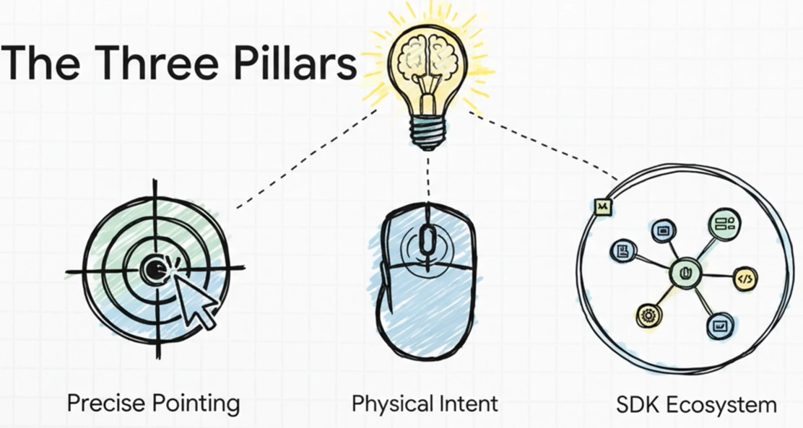
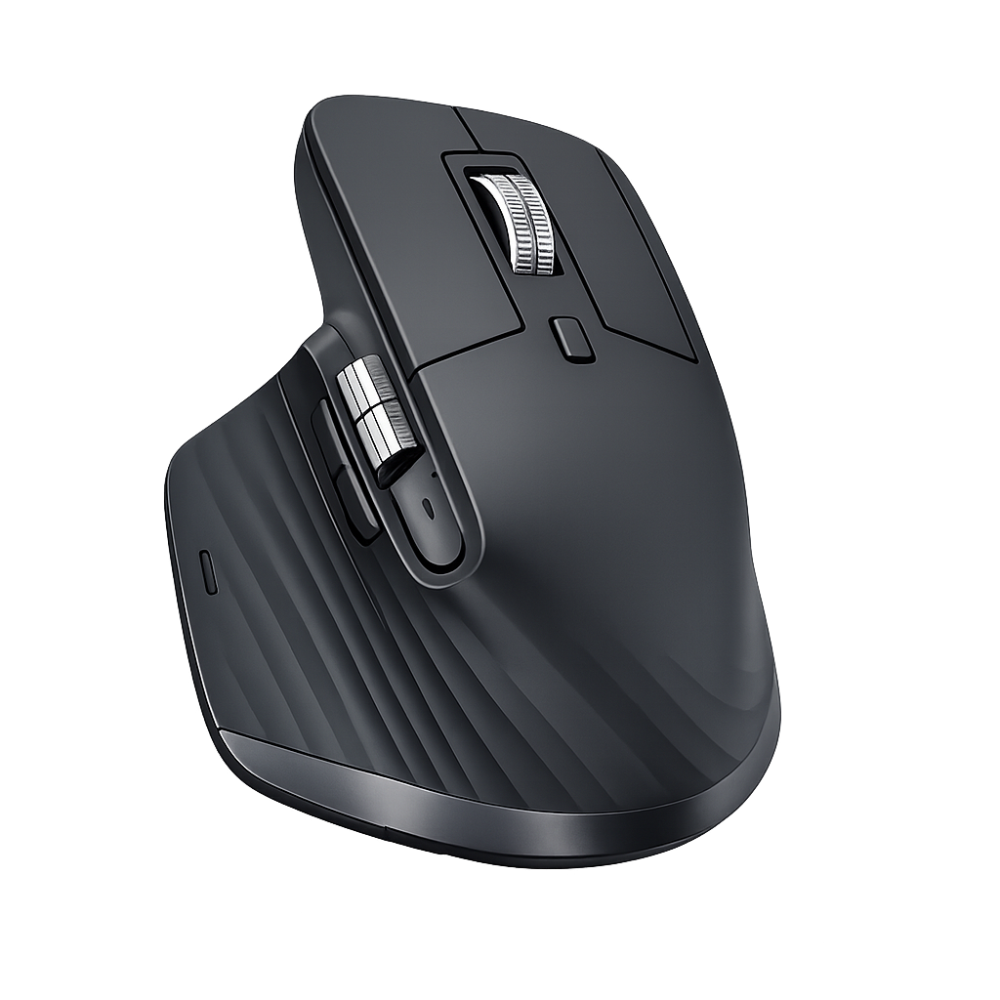
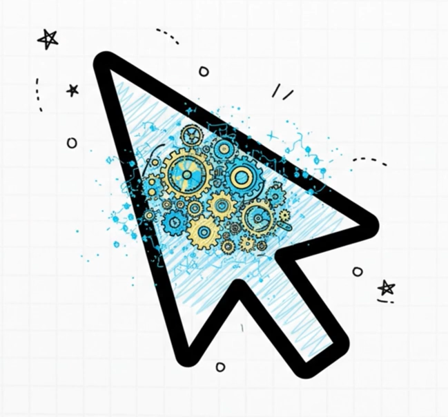
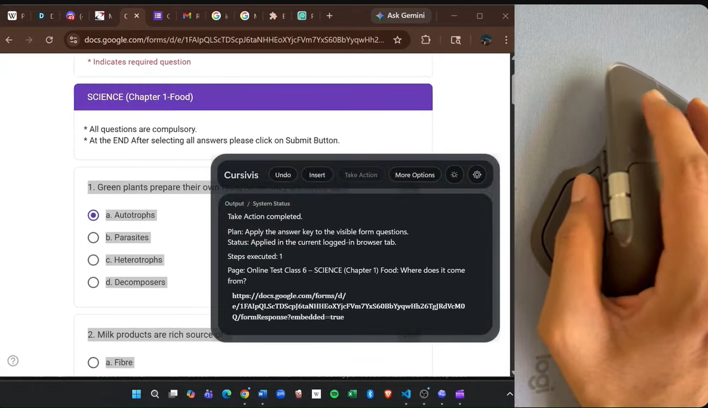
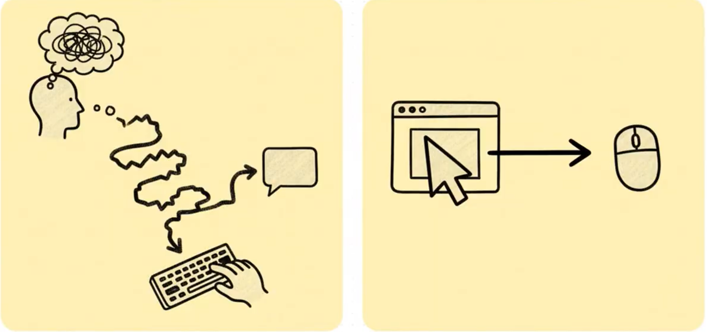
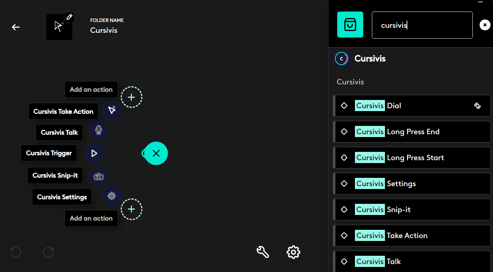
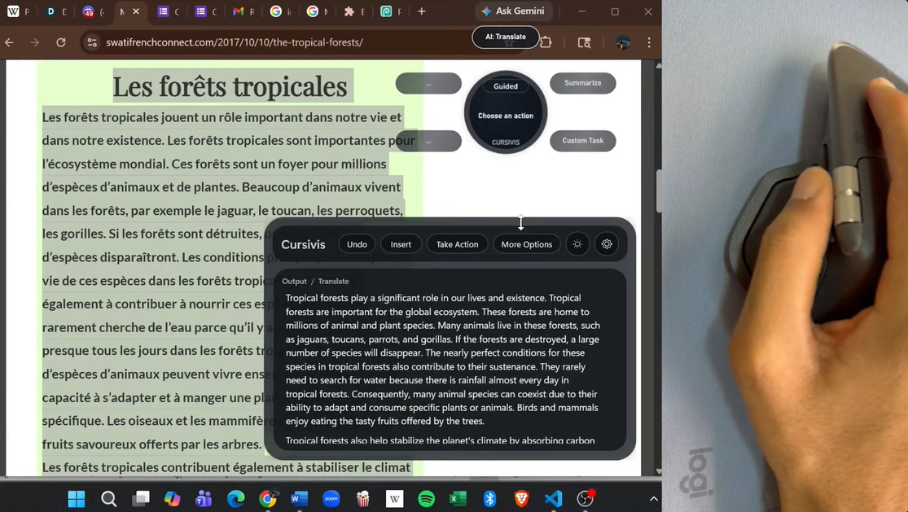
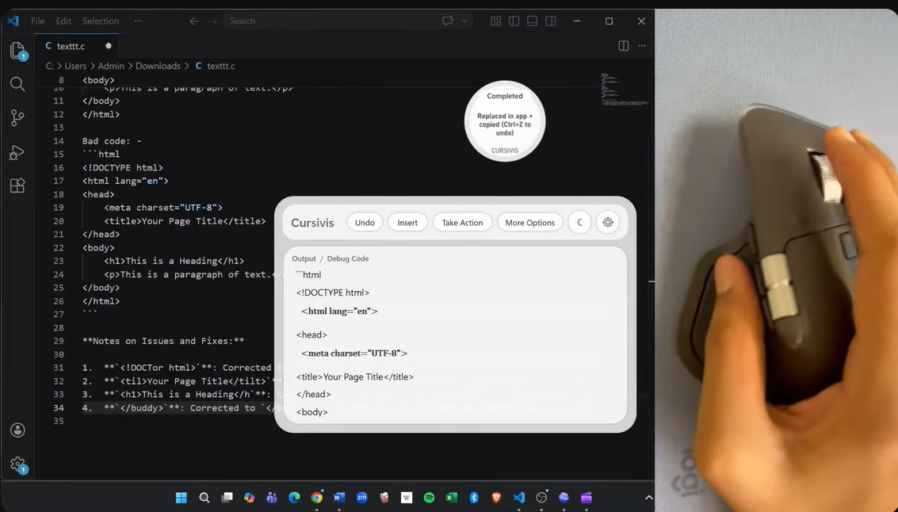
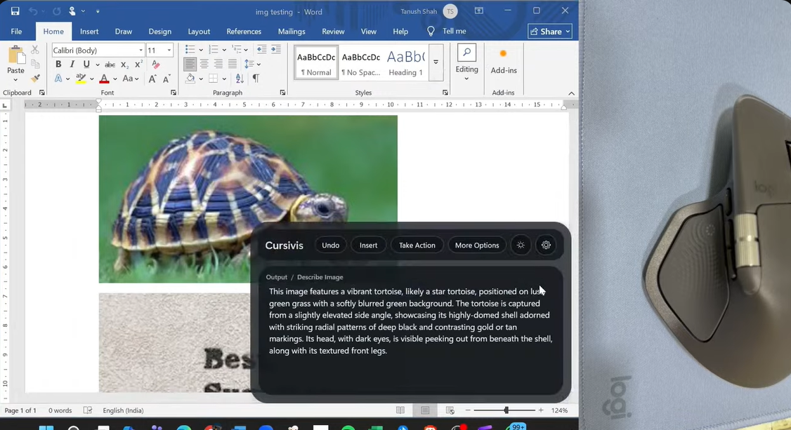

Idea video
Watch on YouTubeThe cursor needed an upgrade
This pitch frames the problem: intelligence is powerful, but the current interaction model still creates friction.


Cursor-native intelligence for Logitech MX hardware
Selection becomes context. Logitech hardware becomes intent. Cursivis turns both into action.
Cursivis reimagines the cursor as an intelligent workflow surface. Instead of opening a chatbot, typing prompts, and switching between apps, the user simply selects what matters and triggers Cursivis through MX Master 4, MX Creative Console, or the Actions Ring so the system can respond directly inside the flow of work.
The system understands the current context, returns the intended result, and can carry that result forward into the live browser workflow. The interaction stays simple. The intelligence adapts to context.
The same deliberate trigger can summarize a long article, translate foreign text, explain code, debug broken logic, read visual content, or continue a browser task through Take Action.

CORE INTERACTION MODEL
Cursivis begins with what the user is already working on. The selection carries the context. Logitech hardware expresses deliberate intent. Cursivis bridges those two moments and responds with the most relevant next step.
PITCH + DEMO
The idea video explains the interaction shift. The execution video shows the full workflow in action.
Idea video
Watch on YouTubeThis pitch frames the problem: intelligence is powerful, but the current interaction model still creates friction.

Execution demo
Watch on YouTubeThis demo shows Smart Mode, Guided Mode, Snip-it, text refinement, and Take Action in a live browser workflow.

AUDIO PITCH
INTERACTION SHIFT
AI usually begins with a blank box. Cursivis begins with the thing the user is already working on.
The current default AI interaction asks the user to describe everything first. Cursivis starts with the thing the user already selected.
The user should not have to stop working just to explain context to a model. In Cursivis, the selection already carries that context. Logitech hardware provides the deliberate trigger. Cursivis bridges those two moments and returns the most relevant next step.
The same physical action can therefore produce entirely different outcomes depending on what is selected: a long article becomes a summary, foreign text becomes a translation, broken code becomes a debugging flow, and a live browser task can turn into real follow-through through Take Action.

CORE MODES
Automatically chooses the best action for the current selection.
Lets the user navigate context-aware options with Logitech controls.
Adds refinement through voice or a floating prompt bar.
Handles image regions, OCR, object understanding, and color capture.
Converts results into structured browser execution steps.

PROOF OF CONTEXT
The interaction stays constant. The output changes with the context already on screen.

Long passages, rules, and foreign-language text become useful output without leaving the current workflow.

The same trigger can explain logic, diagnose problems, and move toward repair depending on the selected code.

Snip-it extends the workflow into OCR, image description, object recognition, and color capture.
Take Action turns generated output into live browser follow-through for forms, MCQs, and repetitive tasks.
WORKFLOW
The front-stage experience stays compact: select, trigger, understand, return the result, and optionally act.
LIVE INTERACTION PATH
flowchart LR
A["Select live context<br/>text, code, image, form, email"] --> B["Trigger from Logitech hardware"]
B --> B1["MX Master button"]
B --> B2["Actions Ring"]
B --> B3["MX Creative Console"]
B1 --> C["Cursivis captures context"]
B2 --> C
B3 --> C
C --> D["Smart Mode or Guided Mode"]
D --> E["Result appears in the AI box"]
E --> F["Insert / More Options / Talk"]
E --> G["Take Action"]
G --> H["Execute in the live browser workflow"]
Choose live context: text, code, image, form, or email.
Use MX Master, Actions Ring, or MX Creative Console.
Cursivis captures context and routes the task.
Smart Mode or Guided Mode returns the right response.
Insert, refine, or execute the next browser step through Take Action.
TECHNICAL STACK
A local-first stack where hardware input, orchestration, reasoning, execution, and feedback stay tightly aligned.
STACK OVERVIEW
flowchart TB
A["Logitech Hardware<br/>MX Master 4 / MX Creative Console / Actions Ring"] --> B["Logitech Plugin Layer<br/>C# + Logi Actions SDK"]
B --> C["Shared IPC Protocol"]
C --> D["Cursivis Companion<br/>C# + WPF"]
D --> D1["Selection capture"]
D --> D2["Orb + AI box UI"]
D --> D3["Smart / Guided / Talk / Snip-it / Take Action"]
D --> E["Reasoning Backend<br/>Node.js"]
E --> E1["Context understanding"]
E --> E2["Action routing"]
E --> E3["Structured browser plans"]
D --> F["Browser Action Layer"]
F --> F1["Chromium extension"]
F --> F2["Browser action agent"]
F --> F3["Native host / fallback execution"]
E --> F
F --> G["Real browser tab and live workflow"]
B --> H["Haptics + hardware feedback"]
D --> H
HARDWARE ADVANTAGE
Logitech does not just launch the workflow. It gives Cursivis the physical language of intent.
The cursor becomes the capture point for text, visuals, UI, and live browser context.
Deliberate buttons and the horizontal wheel make Guided Mode feel hardware-native and fast.
Nested actions provide fast reach into Trigger, Talk, Snip-it, Take Action, and Settings.
Tactile feedback confirms action change, execution, and completion without stealing visual attention.